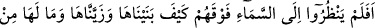
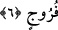
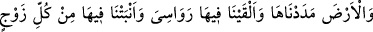
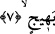

Böyle bir utanç içinde olmasına rağmen garip olan şu ki,
Fahrüddîn (Dinin övüncü) lakabıyla anılmak ister.
Hz. Muhammed (s.a.) hakkında da kafa karışıklığına düştüler (onu yalanladılar).
Neticede Cenâb-ı Allah onları mahvetti ve mü’minlere lütfederek Mekke’yi onlara has
kıldı.
6. Üstlerindeki göğe bakmazlar mı ki, onu nasıl bina etmiş ve nasıl donatmışız!
Onda hiçbir çatlak da yok.
“Üstlerindeki göğe bakmazlar mı ki,” gaflete düştüler ve âhireti inkâr ettiklerinden
dolayı ibret nazarıyla bakmadılar. Hâlbuki semayı devamlı görüyorlardı. Ancak
Allah’ın bu kâinatı yaratmasında, var olan her şeyi yokluktan varlık âlemine
çıkarmasındaki kudretinin eserlerini görmediler ve ibret almadılar.
“Onu nasıl binâ ettik.” Direk olmaksızın yükselttik. “Ve nasıl donattık!” Semâyı
sıralanmış yıldızlarla muhteşem bir düzen içerisinde tezyin ettik. “Onda hiçbir
düzensizlik ve eksiklik yoktur.” Sema “Hiçbir çatlak (ve düzensizlik) görüyor
musun?” (el-Mülk, 67/3) âyetinde de buyrulduğu gibi pürüzsüz, dümdüz, kusurlardan
ve ârızalardan berî olduğu için onda bir yarık, bir çatlak yoktur.
Buradaki çatlak, yarık olmaması semâda kendisine mahsus birtakım kapıların ve
yükselme noktalarının bulunmadığı anlamına gelmez. Nitekim bunlar yani semada
bulunan kapılar vs. kusur ve ârıza kabilinden değildir. Belki de bu ifadenin âyetin en
sonunda zikredilmesi bu kapı ve noktalara işâret etmek içindir.
Âyetteki “fürûc” “iki şey arasını yarmak” anlamına gelen “ferc”’in çoğuludur.
Duvarın çatlamasını ve iki ayak arasını ifade eder. Bu kelime edep yerinden kinaye
olarak kullanılmış, daha sonra bu kullanım o kadar artmış ki sarih anlam gibi olmuştur.
“Ferc” kelimesi “düşman sınırına yakın yer, geçit ve her türlü tehlike mahalli” için
istiare yoluyla kullanılmıştır. Yırtık olan elbiseye de “fürûc” denir. Nitekim Peygamber
Efendimiz (s.a.) ipekten bir elbise (fürûc) giymiş ve daha sonra onu çıkarmıştır.